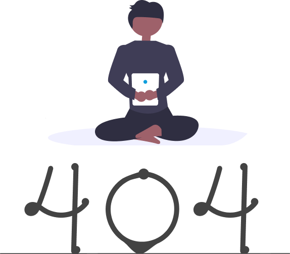

<%- include('partials/metatags', { title: 'Codium: Not found', description: 'Formamos a equipos de programación. Desarrollamos software de calidad. Estamos especializados en Clean code, TDD y patrones de diseño.', }) %> <%- include('partials/analytics') %> <%- include('partials/header/landing-navbar', { menu: [ { title: 'Home', url: '/', }, ] }) %>
UNIT TESTING?
AIN'T NOBODY GOT TIME FOR THAT

<%- include('partials/footer') %>